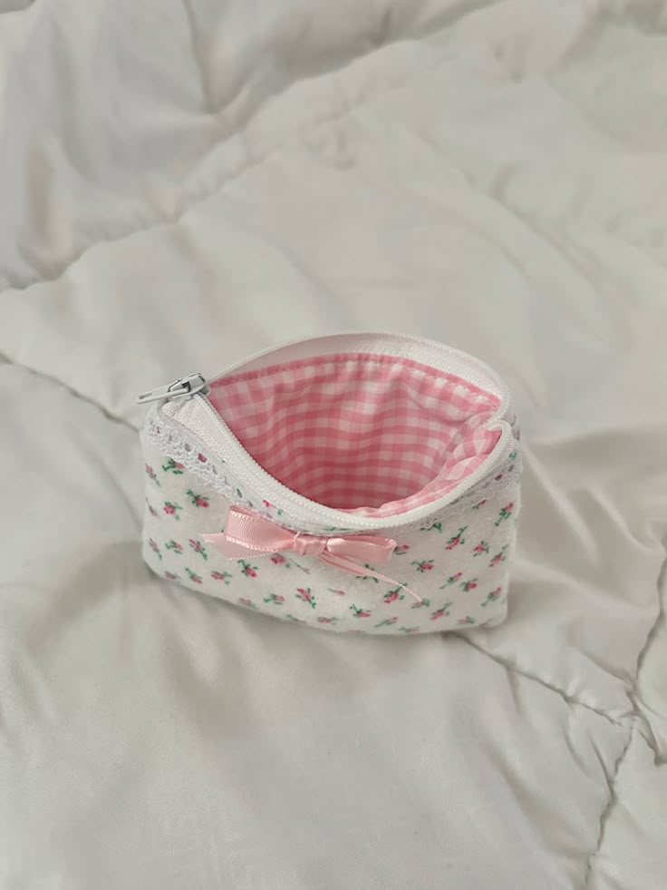
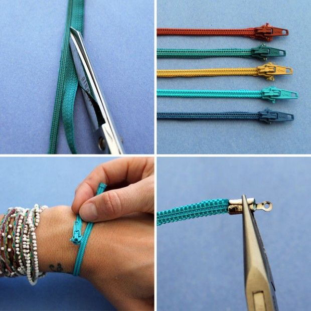

👛 Fermuar Kalemlik / Mini Çanta

Malzemeler:
• 1 uzun fermuar (yaklaşık 1 metre)
• Dikiş iğnesi veya sıcak silikon
• Astar kumaş (isteğe bağlı)
Adımlar:
1- Fermuarı sarmal şekilde katlayarak minik bir torba şekli ver.
2- Her katı birbirine dikin veya yapıştırın.
3- Uç kısmı açık kalacak şekilde ayarlayın – bu kalemlik ağzı olur.
4- Astar eklerseniz daha dayanıklı ve şık olur.
🏵 Fermuardan Gül veya Çiçek Broşu

Malzemeler:
• Metal dişli fermuar (renkli olması görselliği artırır)
• Sıcak silikon veya iğne-iplik
• Broş iğnesi
Adımlar:
1- Fermuarı tamamen ayır ve bir tarafını spiral şekilde kıvır.
2- Kıvırdıkça silikonla yapıştır ya da dikişle sabitle.
3- Çiçek formu elde ettiğinde altına broş iğnesi tak.
4- Kumaş çantalar veya ceketler için hoş bir aksesuar olur.
🎀 Fermuardan Bileklik

Malzemeler:
• Eski fermuar (renkli tercih edebilirsin)
• Düğme veya çıtçıt
• Makas, iğne-iplik veya yapıştırıcı
Adımlar:
1- Fermuarı bilek boyuna göre kes.
2- Uçlarına düğme, çıtçıt veya cırt cırt dikerek kapama mekanizması yap.
3- Dilersen üzerine boncuk, pul, işlemeler ekle.
4- Takılabilir, farklı bir tarzda şık bileklik elde edersin.